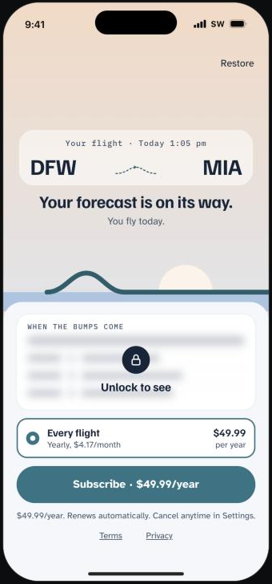
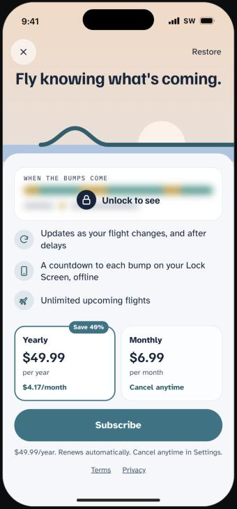

After-departure relaunch
Nov 7. A change to onboarding-near only, built locally in the studio. Nothing is pushed and no campaign has changed.
Problem. Someone who quits on the hard offer gets it again on every launch until 12 h after departure. 0BDB7267 (Meta ad, DFW→MIA 12:05 UTC) tapped the boarding notification and then the landing notification. Both times the hard offer covered their flight, and both times they closed the app within 2 s. The second time, their flight had already landed.
What changes
| Relaunch after quitting on the hard offer | Now (live v5) | Proposed |
|---|---|---|
| Before scheduled departure | Hard offer (1) | Hard offer (1), unchanged |
| Departure to 12 h after | Hard offer (1) | Closable Plans (2): one tap on ✕ and they see their flight |
| More than 12 h after | All the questions again, ending soft | Closable Plans (2) |
Screens


Plans is the existing page and isn't redesigned, so there are no new dark-mode or iPhone SE shots.
Notes
- Code:
components/near.ts(savedHardFlightnow stops at departure; newleftHardOffer) andapp/index.tsx. - "Departure" means the scheduled time. If a flight is delayed, the offer stops early, while they're still at the gate.
- Forecast moments stay held while the offer is open. Once it has passed, the flow clears
onboarding_hard_open, the same as today. - Not part of this change: the forecast check failing on a cold launch from a notification (the app probably answers before it has loaded the flight). That needs an app update.
To build it
Push onboarding-near as v6 and promote it. Add audience "[07/11] Claude v1 Review - near-flier, offer ends at departure" to Onboarding 113534 and pause 199841.